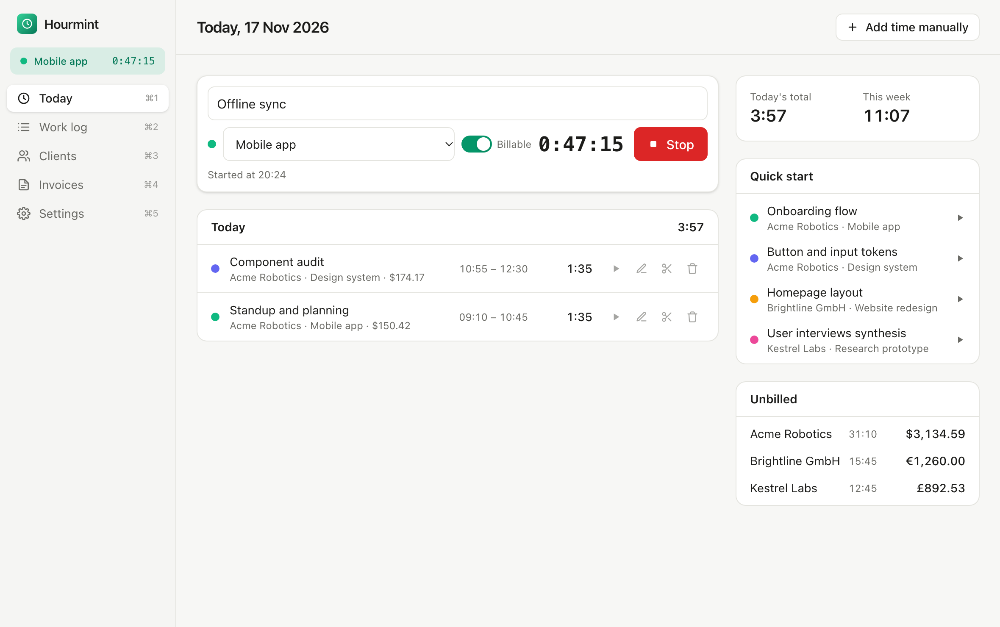
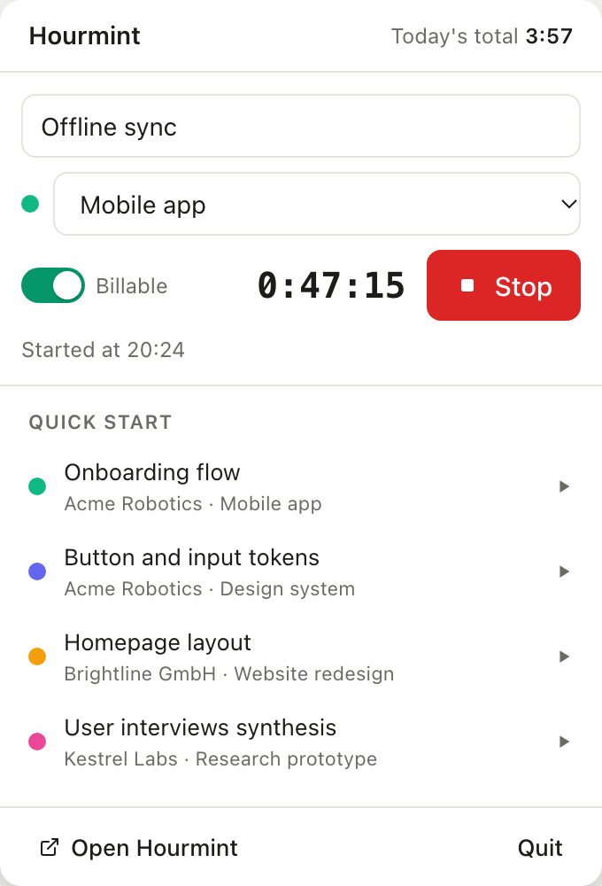

Turn your hours into money.
Hourmint lives in your menu bar. Start a timer when work begins, keep an honest log of what you did, and send a clean PDF invoice with a detailed timesheet when the month ends.
Free · macOS 13 or later · Apple Silicon and Intel · No account

Everything between “start” and “paid”.
No team features, no dashboards to configure. Just the parts a solo freelancer actually uses every day.
Menu bar timer
The elapsed time sits next to your clock. Start, stop or switch projects from a small popover without leaving what you're doing.
An honest work log
Day, week and custom views with totals per client and project. Manual and edited entries are labelled, so your timesheet is one you can stand behind.
Invoices with a timesheet
Pick the hours, choose how lines are grouped, add tax or a discount, and export a PDF with every entry attached. Invoiced hours can't be billed twice.
Idle detection
Walked away with the timer running? Hourmint notices and asks whether to keep or discard the idle time when you come back.
Any currency, any rate
Each client has its own currency and rate, with per-project overrides. Rates are locked onto invoices, so changing them later never rewrites history.
Backups built in
A copy of your data is saved every day, and you can export everything to CSV or JSON at any time. Your records never depend on a service staying alive.
Always one click away.
Click the clock in your menu bar to see what's running, edit the description, or jump back into something you did yesterday.
- Quick start — your recent tasks, one click to resume.
- Survives everything — quit, restart or sleep your Mac and the timer is still right.
- Gentle reminders — a nudge if you forget to start, and a warning if a timer has run for hours.

Invoices your clients can check.
Turn a month of work into a professional PDF in a minute, with the timesheet attached so nobody has to ask “what was this for?”.
- Your numbering — patterns like
INV-{YYYY}-{0001}. - Rounding, tax and discounts — calculated exactly, in your client's currency.
- Draft, sent, paid, overdue — see what you're owed at a glance.
Your data stays on your Mac.
Hourmint is local-first. There is no account to create and no server holding your client list.
No cloud
Everything is stored in a single database file in your Library folder. Back it up, move it, or delete it — it's yours.
No analytics
Hourmint doesn't track how you use it. Nothing about you or your clients is ever sent anywhere.
One network request
The app checks GitHub for new versions. That's the only time it goes online, and it works fine offline.
Install in a minute.
Hourmint isn't notarized by Apple yet, so macOS asks you to confirm the first launch.
Download
Get the latest .dmg from the releases page and drag Hourmint to Applications.
Open once
Open Hourmint. If macOS says it can't verify the developer, go to System Settings → Privacy & Security and click Open Anyway.
Track
Add your first client and press Start. Updates install from inside the app from then on.